Local Transcribe transcribeert video en audio helemaal op je eigen Mac. De spraakherkenning is Whisper large-v3 (via MLX) en een apart model voor sprekerherkenning geeft aan wie er praat. Elk transcript heeft woordtijden en sprekers.
Je kunt de app op twee manieren gebruiken, los of samen:
clip.transcript.json. Een gevolgde map pakt nieuwe bestanden zelf op.Bij de eerste opdracht haalt de app eenmalig het Whisper-model op (ongeveer 3 GB). Daarna gebeurt alles lokaal. De app maakt alleen verbinding met Hugging Face (eenmalig, voor het model), met GitHub (om te kijken of er een nieuwere versie is) en met Iconik als je dat gebruikt. Er gaan geen gebruiksgegevens naar buiten.
Is er een nieuwe versie, dan verschijnt er een melding bovenin het venster. Bij de meeste updates klik je op Installeer: de app haalt de update op, controleert de handtekening, wacht tot er geen opdracht loopt en start zichzelf opnieuw. Bij een grotere update verwijst de melding naar de downloadpagina. Installeer de nieuwe dmg dan op dezelfde manier als de eerste keer.
Een nieuwe opdracht vervangt het transcript dat deze app eerder maakte. Transcripten uit andere bronnen, bestanden die de app niet zelf schreef en correcties uit Refine worden nooit overschreven. Vindt een run geen verstaanbare spraak, dan blijft het eerdere transcript staan.
Open het installatiebestand (dmg). Naast de app staan een snelkoppeling naar Programma's en de handleidingen (Nederlands en Engels). Sleep Local Transcribe naar Programma's.
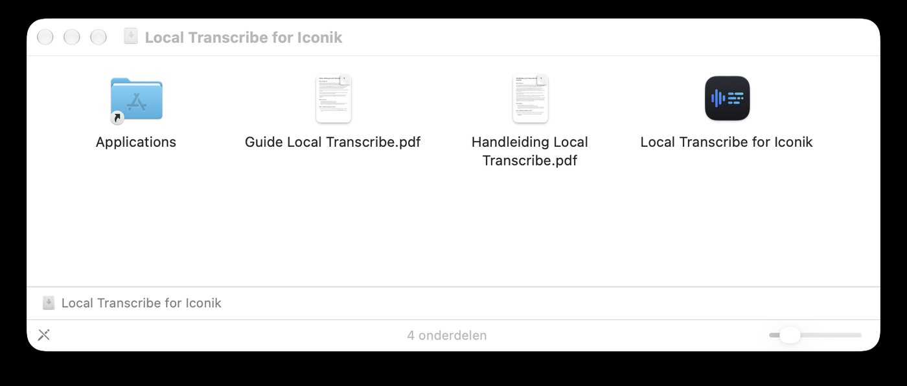
Eerste keer openen. Open de app vanuit Programma's. macOS meldt dat Apple niet kon controleren of de app vrij is van malware, omdat de app nog niet ondertekend is. Klik op Gereed, niet op Verplaats naar prullenmand.
Ga naar Systeeminstellingen, Privacy en beveiliging en scrol naar Beveiliging. Klik naast de melding dat Local Transcribe is geblokkeerd op Open toch.

Er volgt nog een vraag. Kies Open toch en bevestig met je wachtwoord of Touch ID als daarom gevraagd wordt. Dit hoeft maar één keer per Mac.
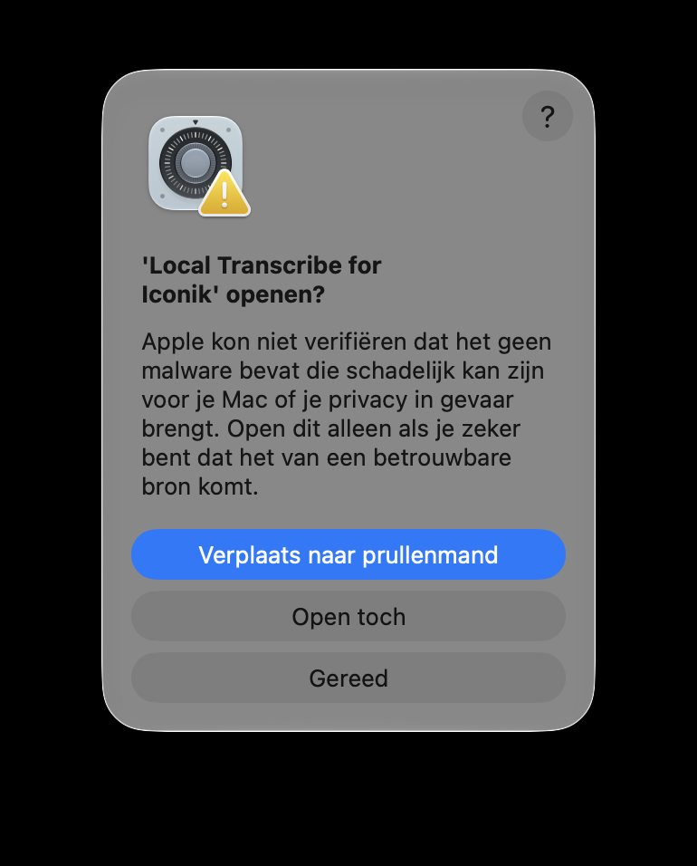
Had je Local Transcribe for Iconik (de naam tot 0.7)? De oude app blijft in Programma's naast de nieuwe staan. Bij de eerste start vraagt de nieuwe app of de oude naar de prullenmand mag. Je instellingen, je Iconik-inlog, transcripten en correcties blijven: die staan los van de app. macOS kan één keer om het wachtwoord van je sleutelhanger vragen: kies Sta altijd toe. Met Sta toe vraagt hij het twee keer.
Het lege venster laat zien waar je bestanden neerzet. Sleep een of meer video- of audiobestanden op het venster, of klik op Kies bestanden…. Tijdens het slepen laat een blauw vlak zien dat de app ze aanneemt.
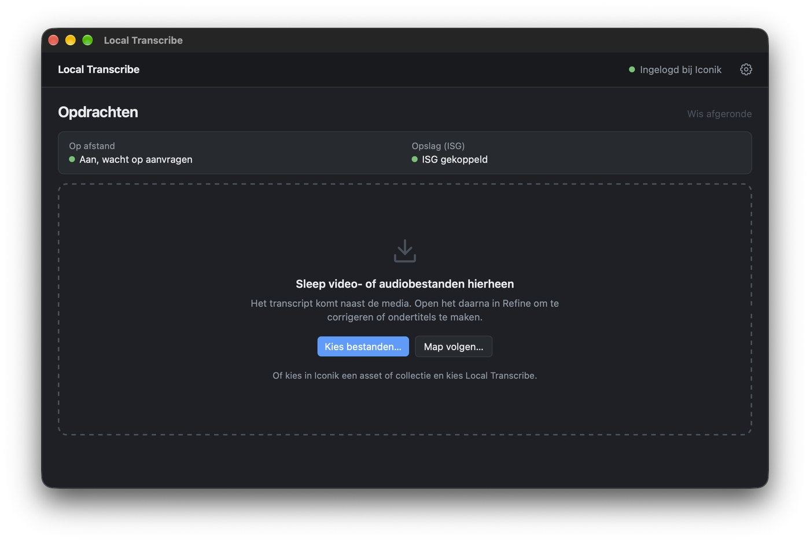
De eerste keer haalt de app het Whisper-model op (ongeveer 3 GB). Het venster laat dat zien met een melding. Dit kan van een paar minuten tot langer duren: het model komt van Hugging Face en zonder account gaat het downloaden daar trager. De voortgangsbalk kan lang op 0% blijven staan terwijl het downloaden wel loopt. Laat de app gewoon draaien. Zodra het model binnen is, begint de transcriptie vanzelf.
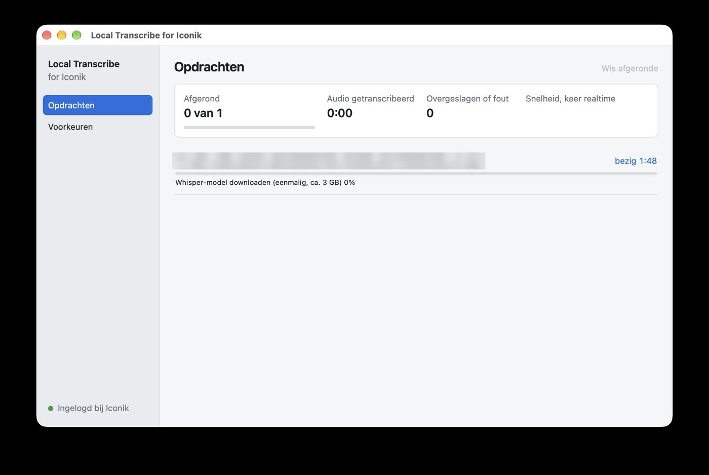
Bij elke afgeronde opdracht zie je het aantal regels, het aantal sprekers, de herkende taal en hoe snel het ging. Onder de titel staan de audiosporen van het bestand. De app kiest zelf de sporen met spraak. Een spoor met hetzelfde signaal als een ander spoor laat hij weg en dat staat erbij.
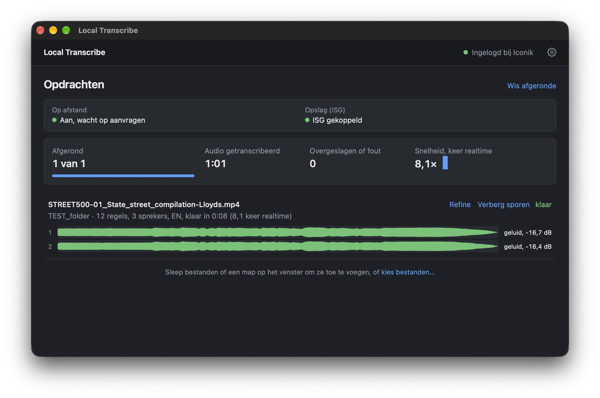
Stop je de app met Cmd+Q terwijl er een opdracht loopt, dan vraagt hij wat je wilt. Na deze opdracht maakt de lopende opdracht af, pakt niets nieuws meer op en sluit dan zelf af. Toch afsluiten breekt de opdracht af; die kun je later opnieuw starten.
clip.mov krijgt clip.transcript.json ernaast. Onder Instellingen › Bestanden (het tandwiel rechtsboven, of Cmd+,) kun je in plaats daarvan In één map… kiezen: alle transcripten gaan dan naar een map die je kiest, met dezelfde mappenstructuur als de bron, zodat twee bestanden die clip.mov heten niet botsen. Staan clip.mov en clip.wav naast elkaar, dan krijgt de tweede clip.wav.transcript.json.
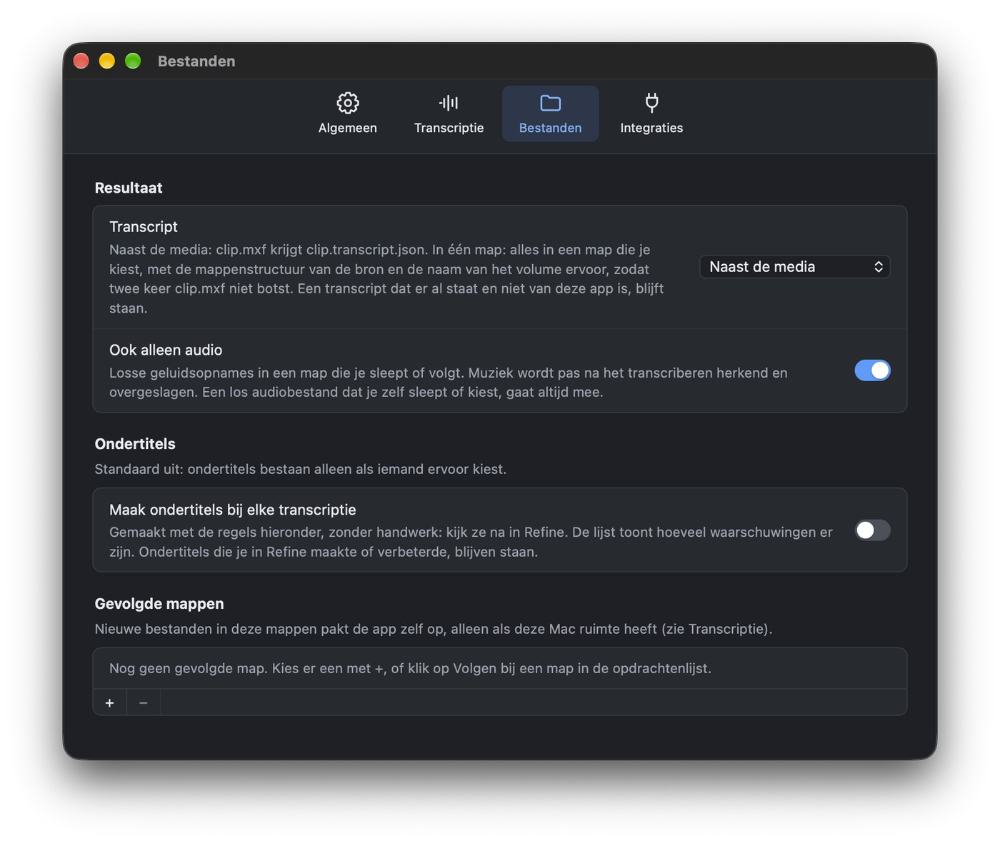
De app herkent een bestand aan een vingerafdruk van de inhoud, niet aan de naam of de map. Een kopie, een verplaatst of hernoemd bestand krijgt het transcript dat de Mac al heeft, zonder opnieuw te transcriberen. Een clip.transcript.json die de app niet zelf schreef, of die bij een ander bestand hoort, blijft staan en de opdracht wordt overgeslagen.
Het formaat van het bestand staat beschreven in docs/format op de projectpagina, zodat andere programma's het kunnen lezen.
Sleep je een map op het venster, dan verschijnt die als groep in de lijst, met alle video en audio erin en in de submappen. Losse audiobestanden gaan ook mee; zet dat uit onder Instellingen › Bestanden, Ook alleen audio. De groep toont de eerste vijf bestanden; toon alles laat de rest zien en met het pijltje klap je de groep in.

Klik op Volgen bij een groep, of op + onder Instellingen › Bestanden, Gevolgde mappen. De app pakt nieuwe bestanden in die map dan zelf op:
Op een schijf die alleen-lezen is, een kaart die op slot staat of een map zonder schrijfrechten zegt de app dat voordat hij begint. De groep (of het bestand) noemt de reden, met Kies een andere plek… en Annuleer.
Kies een map. De transcripten komen daar, in een map met de naam van de kaart of de gevolgde map en dezelfde submappen. De keuze wordt onthouden voor die gevolgde map of schijf; onder Instellingen › Bestanden, Andere plekken staan ze en met Vergeet vraagt de app het de volgende keer opnieuw. Mislukt het schrijven tijdens een opdracht, dan blijft het transcript op de Mac en wordt het weggeschreven zodra je een plek kiest, zonder opnieuw te transcriberen.
Kies een afgeronde opdracht en druk op ⌫, of klik op ✕, om hem uit de lijst te halen. Met de rechtermuisknop zijn er twee keuzes: Verwijder uit lijst en Verwijder ook van deze Mac…, dat weghaalt wat de app op deze Mac over het bestand bewaart (de kopie van het transcript, golfvormen, concepten en originelen van Refine). Het venster biedt ook aan het log te wissen, waar bestandsnamen in staan.
Bij een lokaal bestand heeft het venster nog een keuze, standaard uit: Ook het transcript naast de media. Die zet clip.transcript.json en de ondertitelbestanden in de prullenmand, alleen als de app ze zelf schreef en niemand ze daarna veranderde. Het mediabestand blijft altijd staan.
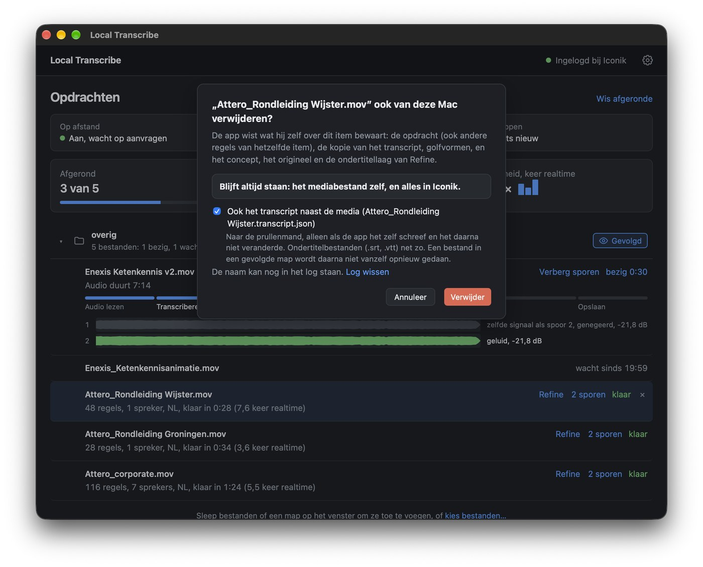
Een netwerkschijf heeft vaak geen prullenmand. Het bestand blijft dan staan en de app meldt dat, met Toch wissen…. Dat wist het definitief, na een tweede bevestiging en alleen wat de app schreef en niemand veranderde. Alles in Iconik blijft staan, ook als het bestand op de opslag van Iconik staat.
Met Refine kijk je een transcript na naast het origineel. Links speelt de video, rechts staan de tekstblokken en onderin staat een tijdlijn met de tekstblokken, de sprekers en elk audiospoor als golfvorm. Open het met Refine bij een afgeronde opdracht.

Het origineel speelt rechtstreeks uit het bestand. Klik op een blok of op de tijdlijn om daarheen te springen. Spatie speelt en pauzeert, de pijltjes springen een seconde (vijf met Shift), Option met een pijltje springt een blok en J, K en L werken zoals in een montageprogramma. Met het koptelefoonknopje bij een spoor hoor je alleen dat spoor; standaard hoor je de mix van de sporen die de app gebruikte.
Elke wijziging wordt meteen als concept op deze Mac bewaard. Je kunt Refine verlaten en later verdergaan; ongedaan maken en opnieuw met Cmd+Z en Shift+Cmd+Z. In de opdrachtenlijst staat dan Concept.
Opslaan schrijft de correctie naast de media, in plaats van het transcript. Het origineel blijft op deze Mac en met Origineel terugzetten haal je het terug. In de opdrachtenlijst staat dan Gecorrigeerd. Onder Instellingen › Transcriptie, bij Refine, zie je hoeveel originelen er bewaard zijn en kun je ze weghalen; daarna kan er geen origineel meer terug.
Een nieuwe transcriptie slaat een gecorrigeerd bestand over en zegt waarom. Wil je het toch opnieuw laten transcriberen, zet dan eerst in Refine het origineel terug.
Een transcriptblok is zo lang als iemand praat. Een ondertitel moet leesbaar zijn: twee korte regels, lang genoeg in beeld. De app maakt ondertitels uit het transcript als tweede laag en bewaart ze als bestand. Het transcript zelf verandert niet. Ondertitels worden alleen gemaakt als je erom vraagt: in Refine, of met de instelling aan het eind van dit hoofdstuk.
Klik op + Ondertitels naast de tab Transcript. Het venster dat opent heeft drie delen:
De regel onderin telt wat je krijgt: hoeveel ondertitels, hoeveel er snel zijn en hoeveel onleesbaar en hoe dat zonder uitloop zou zijn. De tekst wordt nooit ingekort, dus snelle spraak blijft een waarschuwing. Klik op Maken en bewaren.
Staat er al een .srt of .vtt naast de media, dan biedt het venster aan die in plaats daarvan in te laden (Inladen). Je kunt ook elk ander bestand inladen. De ondertitels komen binnen zoals ze in het bestand staan; sprekers en woordtijden komen uit het transcript waar de tekst overeenkomt.
Na het maken staat de tab Ondertitels open en hebben de ondertitels hun eigen baan op de tijdlijn, boven het transcript. Alles uit Refine werkt op de tab waarin je zit: typen, splitsen, samenvoegen, de randen slepen, ongedaan maken en opnieuw. Onder de video zie je de ondertitel zoals hij in het bestand komt.
Verander je daarna het transcript, dan blijven de ondertitels zoals ze zijn en zeggen ze dat het transcript veranderd is. Maak ze opnieuw als je de wijzigingen erin wilt.
De app overschrijft geen ondertitelbestand dat hij niet zelf schreef, of dat iemand daarna veranderde. Laad dat bestand in, of bewaar op een andere plek. In de opdrachtenlijst staat bij een afgeronde opdracht met ondertitels Ondertitels; klik erop om ze te openen.
Zet onder Instellingen › Bestanden, Ondertitels, de schakelaar Maak ondertitels bij elke transcriptie aan (standaard uit, voor lokale bestanden). Kies daarna:
De ondertitels worden direct na het transcript gemaakt. Het zijn dezelfde ondertitels die Refine laat zien, dus je kunt ze daar nakijken en verbeteren. Heb je ze in Refine veranderd, dan laat een nieuwe transcriptie ze met rust. De opdrachtenlijst zegt hoeveel er een waarschuwing hebben, bijvoorbeeld "ondertitels, 3 met een waarschuwing".
Open Instellingen met het tandwiel rechtsboven in het venster, met Cmd+, of via het icoon in de menubalk. Wijzigingen gelden meteen.
Alles in dit deel heb je alleen nodig als je Iconik gebruikt. Met Iconik schrijft de app zijn transcripten terug als echte Iconik-transcripties, met sprekers en woordtijden en start je opdrachten met knoppen in Iconik. Het bestand wordt gelezen van de opslag van Iconik (ISG) die op je Mac gekoppeld is; er wordt niets uit Iconik gedownload.
Stap 1 en 4 gebeuren één keer, door een Iconik-beheerder, voor alle gebruikers tegelijk. Collega's slaan die over, zie Collega's aansluiten.
Dit doet een Iconik-beheerder. Je maakt één applicatie aan waarmee de app mag inloggen.

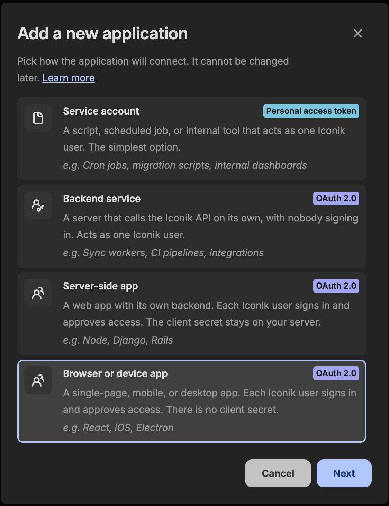
| Veld | Waarde |
|---|---|
| Name | Local Transcribe |
| Redirect URIs | http://localhost:8765/oauth/callback |
| Allowed origins | leeg laten |
| Scopes | assets:read, assets:write, collections:read, user_impersonation |
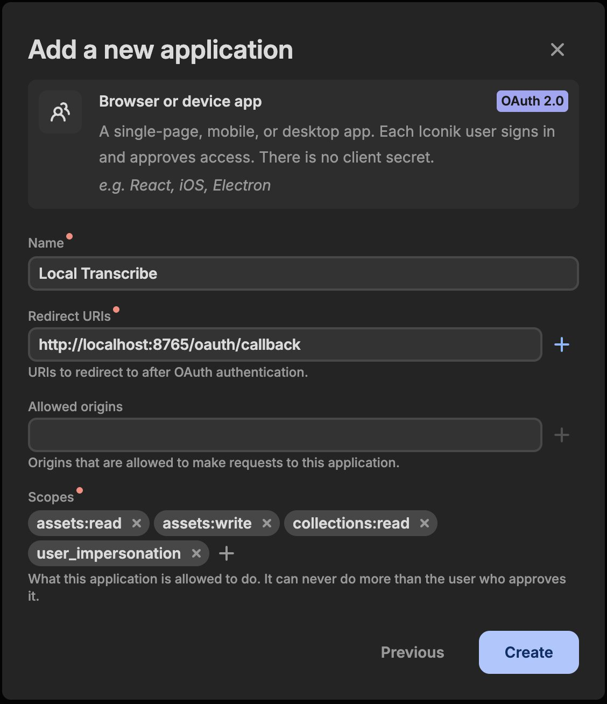


Het venster toont de inlogpagina van Iconik. Vul je e-mailadres in en log in zoals je gewend bent.

Iconik vraagt daarna of Local Transcribe toegang mag hebben. Kijk of het Local Transcribe is die het vraagt en klik op Allow access. In Instellingen staat daarna Ingelogd als met je naam.
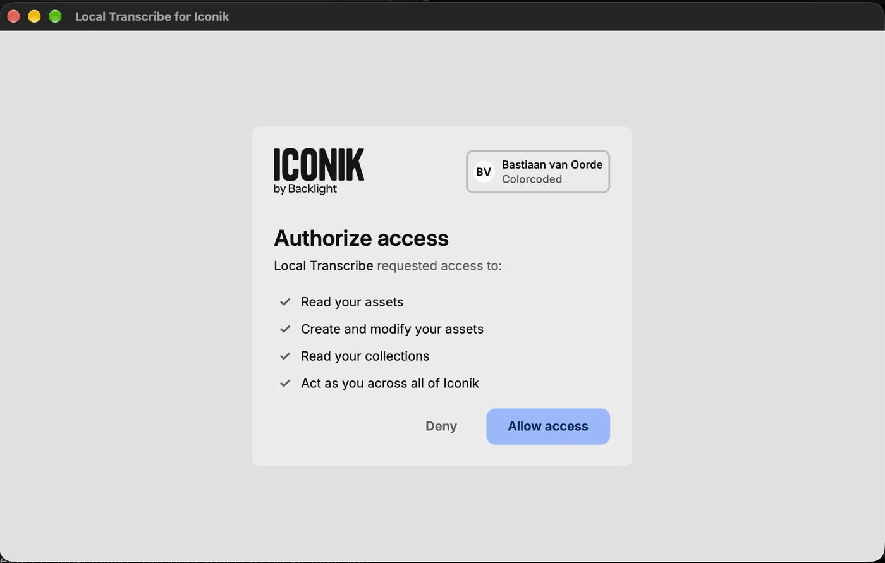
De app bewaart je inlog in de sleutelhanger van macOS. Na het installeren van een nieuwe versie vraagt macOS bij het starten om het wachtwoord van je sleutelhanger: kies Sta altijd toe.
Na het inloggen kijkt de app of de knoppen Local Transcribe en Refine transcript al in deze Iconik-omgeving staan. Zo niet, dan zegt Instellingen › Integraties dat bij Knoppen in Iconik en verschijnt er een gele melding in het opdrachtenvenster. Klik op Zet de knoppen in Iconik. Dat hoeft maar één keer, voor alle gebruikers tegelijk en vraagt het recht om Custom Actions aan te maken.

Kies daarna een asset of collectie in Iconik. Een asset zonder transcript ziet er zo uit; de knop Transcribe in dit paneel is van Iconik zelf, niet van deze app.

Open het menu met de drie puntjes rechtsboven en kies Local Transcribe. De opdracht draait op de computer waar je klikt; de voortgang zie je in de opdrachtenlijst van de app.

De app kijkt elke minuut opnieuw of de knoppen er nog staan. Worden ze uit Iconik gehaald, dan komt de melding vanzelf terug.
Iconik weet per asset op welke opslag (ISG) het bestand staat en in welke map. De app moet weten waar die opslag op deze Mac gekoppeld is. Dat stel je niet vooraf in: het gebeurt bij de eerste opdracht van een opslag en wordt daarna onthouden.
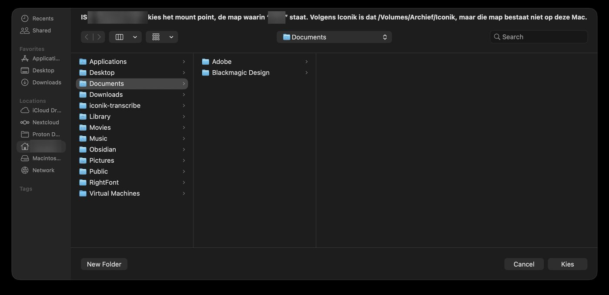
Is het archief niet gekoppeld, dan stopt de opdracht met de melding dat de map niet bereikbaar is. Koppel het archief en start de opdracht opnieuw. Heeft een asset meer dan één mediabestand, dan gebruikt de app het eerste.
Het transcript verschijnt bij het asset onder Transcriptions, met de sprekers en de taal. Regels uit Iconik krijgen in de opdrachtenlijst het label Iconik als er ook lokale bestanden in de lijst staan.
Een collega heeft stap 1 en 4 niet nodig, want die gelden voor de hele Iconik-omgeving. Voor een collega is het:
De Client ID is geen geheim zoals een wachtwoord (er is geen client secret), maar deel hem alleen binnen je eigen organisatie. Iedereen logt in met een eigen account en transcribeert op de eigen Mac.
Meerdere Iconik-omgevingen. Met + onder Integraties voeg je er nog een toe, elk met een eigen Client ID, inlog, naam en opslag. Een tweede koppeling naar een omgeving die al gekoppeld is, wordt geweigerd. Meerdere omgevingen zijn nog niet getest met echte, aparte omgevingen.
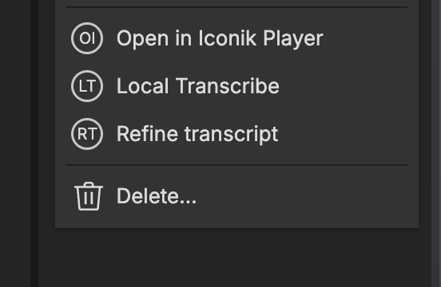
Optioneel. Met Opdrachten op afstand toestaan aan onder Instellingen › Integraties pakt een Mac aanvragen op die in Iconik gedaan zijn, vanaf elke plek en verwerkt ze op de achtergrond. De knop Local Transcribe blijft gewoon werken. Met opdrachten op afstand aan leeft de app in de menubalk en verbergt het sluiten van het venster hem alleen. Het archief moet op die Mac gekoppeld zijn.
Zet in de metadata van het asset Transcriptie op Aangevraagd. De twee velden (Transcriptie en Transcriptie, details) horen bij de metadataweergave Local Transcribe. Zet ze in een weergave die je team al gebruikt als je ze daar wilt hebben.
Open de collectie, selecteer de assets (of selecteer de collectie zelf), klik met de rechtermuisknop en kies Update Metadata. Vink Transcriptie aan, kies Aangevraagd en klik op Update. Alleen aangevinkte velden veranderen. Elk asset in de selectie krijgt de aanvraag.

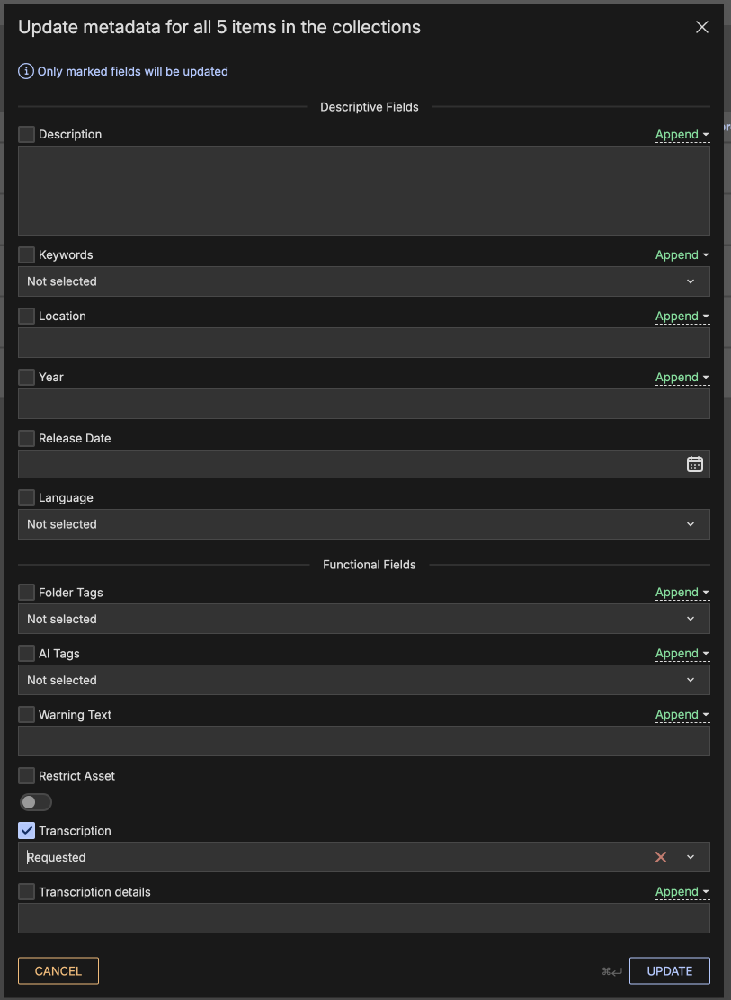
| Transcriptie | Betekenis |
|---|---|
| Aangevraagd | Wacht tot een Mac het oppakt |
| Bezig | Een Mac werkt eraan. Het detailveld zegt welke Mac, sinds wanneer en het laatste teken van leven |
| Klaar | Het transcript staat bij het asset onder Transcriptions. Een asset zonder audio of zonder spraak is ook Klaar, met "Overgeslagen:" en de reden in het detailveld |
| Fout | De reden staat in het detailveld. Zet het weer op Aangevraagd om het opnieuw te proberen |
Macs delen de rij zonder dubbel werk. Een Mac die bezig is, ververst elke minuut een laatste teken. Blijft het vier minuten stil, bijvoorbeeld omdat hij in slaap viel of het archief kwijtraakte, dan neemt een andere Mac het asset over. Een opdracht die vijftien minuten niet opschiet, geeft de app zelf terug, waarna hij opnieuw start. Na drie pogingen gaat een asset naar Fout, met de reden.
Een Mac met een eigen probleem (archief niet gekoppeld, niet ingelogd) pauzeert tien minuten. Instellingen en de menubalk zeggen waarom. Nu hervatten heft de pauze meteen op.
Het detailveld noemt de Mac die het werk deed, voor iedereen die het asset ziet. Standaard is dat de computernaam en daar staat vaak de naam van een persoon in; met Naam onder Opdrachten op afstand stel je een andere in.
De labels die je in Iconik ziet (Aangevraagd, Bezig, Klaar, Fout) hangen af van de taal van de Iconik-omgeving. De waarden erachter zijn altijd Engels. Een beheerder kiest de taal onder Instellingen › Integraties, Labels in Iconik. Dat geldt voor iedereen in die omgeving.
Getest met twee Macs op één Iconik-account. Meer Macs en aparte Iconik-accounts zijn nog niet getest.
Optioneel en alleen met Opdrachten op afstand toestaan aan. Zet Transcribeer zelf wat nog geen transcript heeft aan en de Mac werkt alles af op zijn gekoppelde opslag (ISG) dat nog geen transcript en geen transcriptiestatus heeft. Niemand hoeft iets aan te vragen.
[auto] in het veld Transcriptie, details in Iconik.| Wat je ziet | Wat er aan de hand is | Wat je doet |
|---|---|---|
| Een groep of bestand zegt dat de app hier niet kan schrijven | De schijf is alleen-lezen, de kaart staat op slot, of je hebt geen rechten op de map | Klik op Kies een andere plek…, of zet de rechten goed en voeg de bestanden opnieuw toe |
| Overgeslagen: naast dit bestand staat al clip.transcript.json, niet van deze app | Een clip.transcript.json van een ander programma, of van een ander bestand | Niets, of zet dat bestand ergens anders neer en voeg de media opnieuw toe |
| Een gevolgde map pakt niets op | De Mac heeft nu geen ruimte, het bestand verandert nog, of de map is niet bereikbaar | De statusstrook zegt waarop hij wacht. Bestanden worden 15 seconden nadat ze niet meer veranderen opgepakt |
| Iconik: nog niet verbonden | Nog geen Client ID ingevuld | Deel 2, stap 2 |
| Iconik: niet ingelogd | Je bent uitgelogd | Klik op Log in bij Iconik onder Instellingen › Integraties. Werkt dat niet, kijk dan de Client ID na |
| Iconik zegt dat de app niet als OAuth2-client is ingesteld | De Client ID klopt niet of is niet compleet | Kijk de ID uit stap 1 na en vul hem opnieuw in |
| Gele melding dat de knoppen ontbreken | De knoppen staan nog niet in Iconik, of zijn weggehaald | Klik op Zet de knoppen in Iconik. Wordt dat geweigerd, vraag dan een Iconik-beheerder één keer in te loggen in deze app en ze toe te voegen |
| De map is niet bereikbaar, is de opslag gekoppeld? | Het archief staat niet op deze Mac | Koppel het archief en start de opdracht opnieuw |
| Bestand niet gevonden | De gekozen map past niet bij het asset | Kies een andere map onder Instellingen › Integraties, Opslag (ISG) op deze Mac |
| Een asset blijft op Aangevraagd staan | Er draait geen Mac met Opdrachten op afstand toestaan aan, elke Mac is bezig, of de Macs die aan staan zijn gepauzeerd | Kijk of er een Mac met opdrachten op afstand aan draait en ingelogd is, met het archief gekoppeld. Een aanvraag wacht op lopende opdrachten, ook automatische |
| Een Mac zegt dat hij gepauzeerd is | Hij liep tegen een eigen probleem aan, bijvoorbeeld een archief dat niet gekoppeld was | Los de oorzaak op die Instellingen of de menubalk noemt en klik op Nu hervatten. Anders eindigt de pauze vanzelf na tien minuten |
| Gele balk of melding: opslag (ISG) niet bereikbaar | De opslag is niet gekoppeld op deze Mac, bijvoorbeeld na een herstart of omdat het archief uit staat | Koppel de opslag opnieuw, bijvoorbeeld in de Finder. De app gaat vanzelf verder. Wil je een netwerkschijf bij elke login koppelen, zet hem dan onder Systeeminstellingen > Algemeen > Inloggen |
| Overgeslagen: geen audio of video bij dit asset | Het asset bevat alleen beelden, lettertypen, documenten of een projectbestand | Niets. Het asset krijgt de status Klaar met deze melding, zodat het niet opnieuw wordt opgepakt |
| Automatisch transcriberen of een gevolgde map zegt Wacht | De Mac heeft nu geen ruimte: op batterij, te weinig geheugen vrij, processor of GPU te druk | Niets, hij begint vanzelf zodra er ruimte is. Vlak na het aanzetten meet hij eerst ongeveer een minuut |